地政学
ベンガルールは南インド内陸の高原にあり、州都、研究機関、軍需航空、国際空港を通じて国内政策と世界市場を結びます。海港ではなくても、技術、人材、資本の移動でインドの対外接続を担う要衝です。南の要です。

🇮🇳 インド / カルナータカ州 / World City Atlas
涼しい高原気候、IT回廊、航空宇宙研究、大学、庭園都市の記憶、急速な住宅開発が重なる南インドの大都市です。世界経済の回路と地域の日常が同じ道路で交差します。
都市の骨格
ベンガルールは海港都市ではなく、高原上の州都、軍事拠点、公共研究機関、電子産業、ITサービスが積み重なった内陸都市です。空港、外環道路、メトロ、湖の連なりが、急成長する生活圏を結びます。
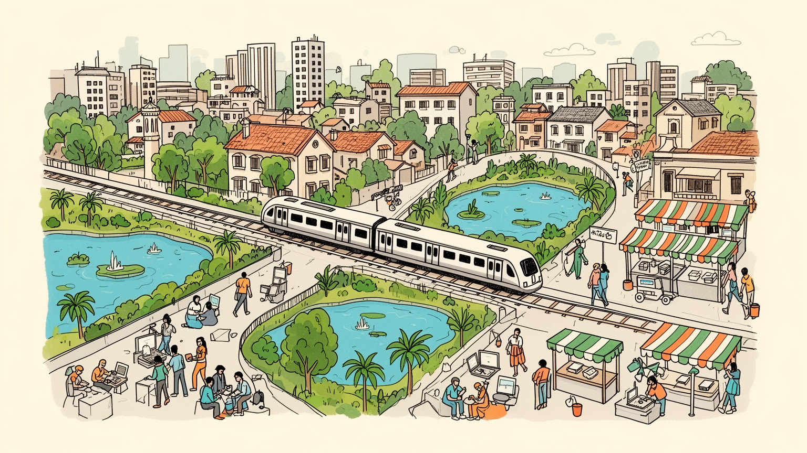
ベンガルールは南インド内陸の高原にあり、州都、研究機関、軍需航空、国際空港を通じて国内政策と世界市場を結びます。海港ではなくても、技術、人材、資本の移動でインドの対外接続を担う要衝です。南の要です。
ITサービス、半導体設計、航空宇宙、バイオ、大学、スタートアップが成長を支える一方、警備、清掃、配送、運転、家事、建設、食堂の労働が毎日を動かします。賃金差も近くに並びます。厚い街です。成長の現場です。
カンナダ語文化、タミル、テルグ、マラヤーラム、ヒンディー、英語の生活が混ざり、寺院、教会、モスク、ジャイナ教施設が地区に残ります。食、音楽、大学祭、祭礼が多言語都市を形作ります。深い街です。日常も厚い。
ラールバーグ、宮殿、市場、湖、ブルワリー、寺院は旅を誘いますが、住民には渋滞、水不足、家賃、通勤、学校、雨季の浸水が日常の条件です。夜の飲食街と基盤の緊張が重なります。いまも濃い街です。生活も近いです。
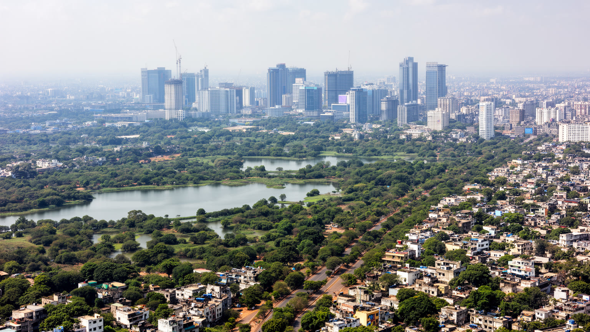
ベンガルールはデカン高原南部、標高約九百メートルの台地に広がります。海から離れた内陸都市でありながら、涼しい気候、軍事拠点、行政機能、研究機関が集まり、やがて電子産業とITサービスを呼び込みました。地形は平坦に見えても、古い湖、排水路、低い谷筋、花崗岩の丘が都市の骨格を作ります。かつて貯水と灌漑に使われた湖は、住宅地、オフィス団地、道路に囲まれ、豪雨時には浸水や水質汚染の問題を露出させます。外環道路、空港道路、メトロ、郊外バスは生活圏を広げる一方、移動距離を長くし、渋滞を日常化させました。高原の涼しさは魅力ですが、水源を遠くに求める構造は脆弱です。都市を読むには、テックパークだけでなく、湖の縁、排水溝、旧市街、市場、周辺村落を結ぶ道路まで見る必要があります。周囲の農地や村が市街地に吸収されると、地名だけが残り、雨水が流れる自然の筋は見えにくくなります。速い道路は投資を呼びますが、徒歩や自転車の道が弱ければ近所の生活は不便になります。空港へ向かう新しい軸と旧市街へ戻る細い道の差も大きく、どちらを使うかで都市の印象は変わります。地図では近い場所でも、湖を迂回する道や混む交差点によって生活上の距離は伸びます。高原の風も、地区ごとの密度で感じ方が変わります。地形への配慮が、成長の持続性を静かに左右します。
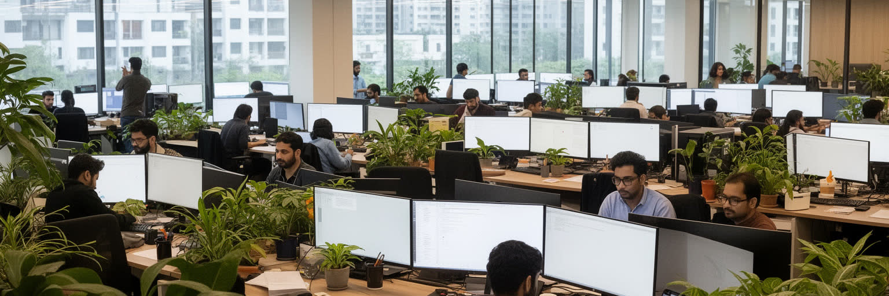
ベンガルールの名を世界へ広げたのは、電子産業、公共研究、英語教育、理工系人材、海外企業の業務委託が結びついたITサービスです。ホワイトフィールド、エレクトロニックシティ、外環道路沿いのオフィス群には、ソフトウェア開発、クラウド運用、半導体設計、金融事務、データ分析、サポート業務が集まります。米国や欧州の勤務時間に合わせた夜の会議、通勤バス、警備ゲート、食堂、コワーキング空間は、世界経済の時間割を都市の日常へ持ち込みます。高収入の技術職は消費と住宅市場を押し上げますが、採用競争、長時間労働、契約の不安、技能更新の圧力も大きいです。起業家の成功談の背後には、資金調達に失敗した会社、学び直す若者、下請け開発、派遣の仕事もあります。リモート勤務や自動化が進むほど、都市に集まる意味も変わります。顔を合わせる研究、採用、投資、偶然の交流は残りますが、混雑と家賃が重すぎれば才能は別の都市へ動きます。海外顧客の信頼は、停電対策、データ保護、英語対応、深夜勤務の安全にも支えられています。小さな会社が大企業の周辺で部品、法務、採用、食事、移動を担うため、産業の裾野も厚くなります。競争力は通信速度だけでなく、通勤時間、保育、家賃、空気、水の質にも左右されます。IT回廊は、生活基盤まで含めて初めて成り立つ産業都市です。
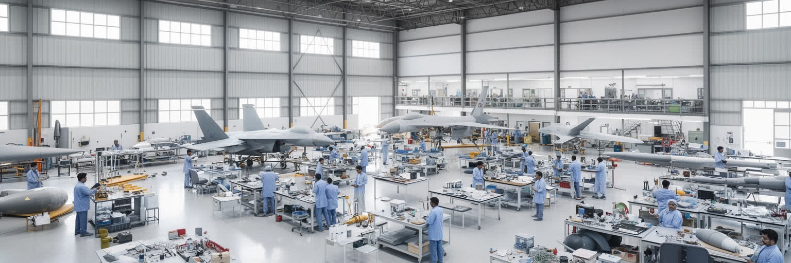
ベンガルールは民間ITだけでなく、航空宇宙、軍需、宇宙開発、公共研究の都市でもあります。航空機産業、宇宙機関、国防研究、理工系大学、医学研究、バイオ技術企業は、都市に長い専門職の層を作ってきました。これらの機関は植民地期の軍事拠点、独立後の国家主導の工業化、冷戦期の研究開発、現在の民間技術産業をつなぎます。研究都市としての強さは、実験室やキャンパスだけでなく、部品工場、試験施設、技術者の住宅、専門学校、公共部門の安定雇用にも支えられます。スタートアップの速い資金循環とは異なり、航空宇宙や公共研究は長期の訓練、失敗を許す時間、国家予算を必要とします。高度な技術ほど、精密部品の供給、試験の安全、長期の調達、機密を守る制度が欠かせません。公共部門で育った技術者が民間企業へ移り、民間の速度が研究機関へ刺激を返す循環もあります。こうした研究は国家の安全保障、通信、気象観測、医療機器、教育にも波及し、市民生活から遠いものではありません。展示会や学会、試験場へ向かう技術者の移動も、都市の専門的な交流を支えています。若い研究者の雇用条件も、この基盤を保つ重要な課題です。研究機関の周辺には書店、食堂、賃貸住宅、通学路があり、知識産業は静かな生活圏として存在します。長期の研究文化があるから、新しい産業も根を張れます。
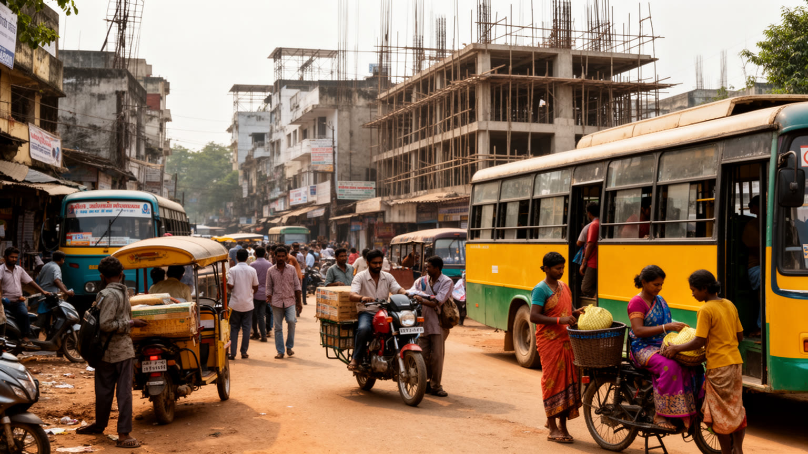
ベンガルールの労働は、ソフトウェア技術者だけで成り立ちません。警備員、清掃員、運転手、配送員、家事労働者、建設労働者、調理人、屋台商、園芸作業員、コールセンター職員が、都市の速度を支えています。カルナータカ州内の町村だけでなく、タミル・ナードゥ、アーンドラ、テランガナ、ケララ、北インドから来た人々も多く、言語、住居、賃金、通勤、医療へのアクセスで不利になりやすい。アプリで呼べる配車や食事、二十四時間動くオフィス、清潔なキャンパスは、誰かの長い待機時間と低い交渉力の上に成立します。高技能職の収入が上がるほど家賃と地価は上がり、サービス労働者は中心から遠ざかります。配達員が雨と排気の中を走り、VV Puramの屋台や市場の荷運びが夜まで続く光景も、成長の一部です。労働者の子どもが学校へ通えるか、高齢の親を近くで支えられるか、病気の時に休めるかは都市の持続性に直結します。言葉の違いは職場の安全説明や行政手続きにも影響し、同郷者の紹介や小さな宿舎が生活を支えます。便利なサービスが安く速く届くほど、その費用を誰が負担しているのかを問う必要があります。女性の夜勤移動、移住労働者の身分証、家事労働の契約、配達員の事故補償は、成長都市の見えにくい論点です。都市の豊かさは、支える人が安全に住み、休み、移動できるかで測られます。
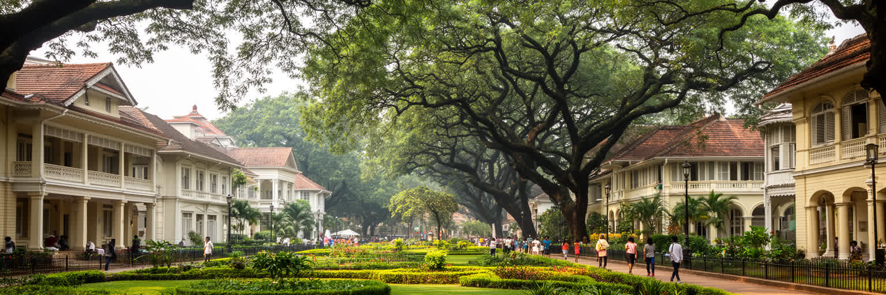
ベンガルールには「庭園都市」という記憶が残ります。ラールバーグ植物園、カボン公園、街路樹の多い地区、広い公共施設の敷地は、高原の涼しさと緑の都市像を支えてきました。春のジャカランダ、雨上がりの土の匂い、湖からの湿った風は、交通排気の強い幹線道路とは別の都市感覚を残します。同時に、この都市はカントンメントの歴史を持ち、軍用地、英語教育、教会、クラブ、兵站、鉄道の記憶が旧市街とは違う街路の幅や建物の並びを作りました。ペート地区の市場や寺院、カントンメントの教会やバンガロー、公共研究機関のキャンパス、新しいオフィス街を歩くと、都市が一つの計画ではなく複数の制度に分かれて育ったことが分かります。庭園都市のイメージは魅力的ですが、緑地は不動産開発、道路拡幅、駐車需要、地下インフラ工事の圧力を受けています。公園は観光客の休息だけでなく、高齢者の散歩、子どもの遊び、学生の待ち合わせ、屋外労働者の休憩を受け止めます。花の展示や朝の散歩、週末の家族連れは、都市が仕事だけでできていないことを示します。歴史的な緑地を守ることは、観光資源を守るだけでなく、暑熱と孤立を和らげる近隣の居場所を残すことでもあります。KaragaやDasara、Deepavaliの人出も、こうした広場や街路に都市の記憶を重ねます。街路樹は景観だけでなく、徒歩を可能にする社会インフラです。
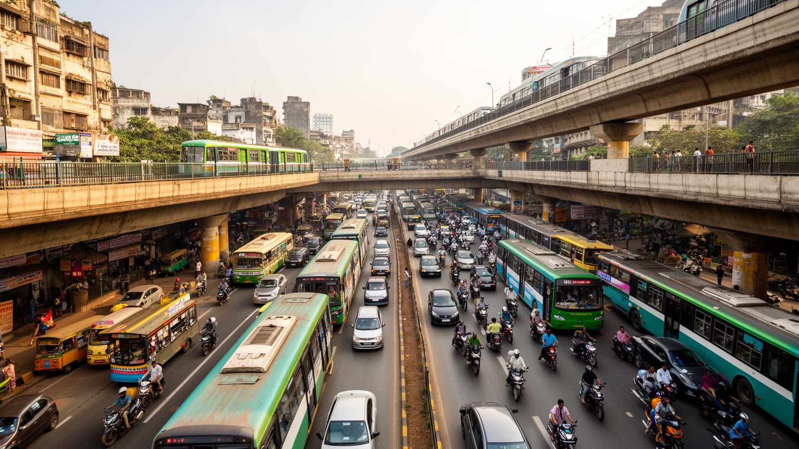
ベンガルールの日常を最も強く形づくるのは移動です。外環道路のオフィス群、空港、旧市街、市場、大学、住宅地は広く散り、道路の混雑は仕事、睡眠、家族の時間を奪います。企業バス、配車アプリ、二輪車、オートリキシャ、BMTCバス、メトロが重なっても、成長の速度に交通網が追いつきにくい。駅で響くメトロの到着音、雨の日のブレーキ音、排気の匂い、配達員のスマートフォン通知は、この都市の通勤風景を作ります。メトロの延伸は重要ですが、駅までの歩道、バス接続、日陰、雨天時の安全がなければ、使える人は限られます。渋滞は単なる不便ではなく、燃料、空気、ストレス、救急搬送、女性の安全、低所得者の通勤費に影響します。高い住宅地に住める人ほど職場に近づき、安い住宅を選ぶ人ほど長く移動します。物流車両と通勤車、二輪車と歩行者が同じ道を奪い合うため、道路空間の配分も問われます。歩道が途切れ、バス停に屋根がなく、交差点が危険なら、公共交通の価値は大きく下がります。通勤に消える時間は子どもの送り迎え、家族の食事、睡眠、学習、高齢者の通院、近所づきあいを削り、都市の疲労として蓄積します。空港への速さだけでなく、学校、病院、市場へ行く短い移動を守ることが、住民にとっての都市の質になります。交通政策は車の流れではなく、生活時間の公平性を扱う政策です。
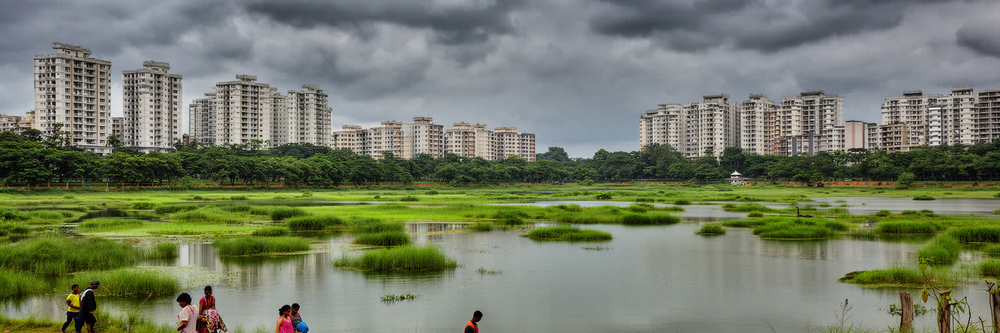
ベンガルールの環境問題は水から始まります。高原都市は大河のほとりにないため、遠方の水源、地下水、雨水、湖の管理に依存します。人口とオフィスが急増すると、需要は増え、井戸は深くなり、湖には生活排水と建設の圧力がかかります。雨季の豪雨は涼しさをもたらす一方、埋められた排水路や低地の開発を暴き、道路冠水や住宅被害を起こします。湖の再生運動、市民の清掃活動、裁判、行政計画は重要ですが、都市化の速度に追いつくのは難しい。水を買える集合住宅と、給水車を待つ地区の差は、都市の不平等をはっきり示します。企業キャンパスが緑を保っても、周辺の湖や排水が壊れれば都市全体は弱くなります。乾季の水不足と雨季の浸水が同じ都市で起きるのは、水を貯め、染み込ませ、ゆっくり流す仕組みが失われているからです。気候変動で雨の強さと乾季の不安が増すほど、水道、排水、湖、公共空間を一体で守る力が問われます。家庭の節水だけでは足りず、建設許可、下水処理、湿地保全、産業用水の管理まで同時に動かす必要があります。湖を公共の財産として扱えるかが、次の成長の質を左右します。雨水を地面へ戻す空地、湖を結ぶ水路、歩ける緑陰、廃棄物の分別は派手ではありませんが、都市を守る基礎です。水の問題を先送りすると、最も弱い地区から生活が苦しくなります。
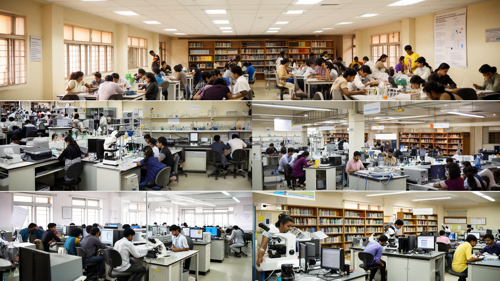
ベンガルールの成長は、大学、研究所、専門学校、研修会社の厚い層なしには説明できません。IIScやIIM Bengaluruをはじめ、理工系大学、経営教育、医学、デザイン、バイオ、データ分析、語学学校、試験準備の教室が、若者に都市へ来る理由を与えます。学生はインターン、共同研究、起業、外資系企業の採用へ近づけますが、学費、英語力、住居、通学、家族の期待によって機会は均等ではありません。教育都市であることは、図書館や研究室だけでなく、安い食堂、寮、シェア住宅、コピー店、夜遅くまで開くカフェ、通学路の安全を必要とします。研究機関と企業が近いことは知識の移動を速めますが、短期の採用需要に教育が偏ると、基礎研究や地域社会への関心は弱まりやすい。試験競争や就職競争は家庭の支出を増やし、失敗した若者に孤立感を与えることもあります。図書館、公共交通、相談窓口、手ごろな住まいは、教育機会を支える都市基盤です。大学祭、研究発表、ハッカソン、書店の棚、KannadaとEnglishの新聞やデジタルメディアは、専門知と若い文化が出会う場にもなります。企業研修の需要も大きく、働きながら学び直す人が都市の教室を支えています。若者がこの都市で学び、働き、住み続けるには、給与だけでなく、公共交通、家賃、言語の包容力、文化的な居場所が重要です。知識都市の力は、才能を集めることと同時に、学ぶ人を消耗させない環境にあります。
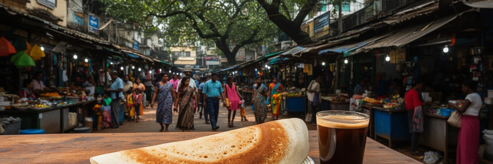
ベンガルールの食文化は、カンナダ語圏の家庭料理と、南インド各地、北インド、ムスリム料理、世界的なカフェ文化が重なることで生まれます。朝のドーサ、イドゥリ、ヴァダ、フィルターコーヒー、昼のミールス、夜のビリヤニや屋台料理は、学生、技術者、運転手、家族、観光客を同じ街路へ集めます。VV Puramの屋台、Commercial Streetの買い物帰り、Church StreetやIndiranagarのクラフトビール店では、香辛料、焙煎豆、雨に濡れた舗道、音楽の低音が重なります。移住者が多い都市では、食堂が出身地の言語や情報を保つ場所にもなります。旧市場の香辛料、野菜、花、肉、菓子店は地域の時間を示し、新しい地区のブルワリー、カフェ、フードコートは若い消費文化を映します。ただし、安い一皿は長時間労働、早朝の仕入れ、低い賃金、家族経営の負担に支えられています。祭礼や週末には外食が増え、屋台、配達員、清掃、警備の仕事も増えます。宗教や出身地による食の選択は、近所の店の品ぞろえや会話にも現れます。朝の市場、昼の定食、夕方のコーヒー、夜の屋台を追うと、都市の一日が食で区切られることが分かります。飲食店は求人や住まいの情報が流れる場でもあり、新しく来た人の足場になります。飲食街が賑わうほど、家賃、騒音、廃棄物、夜間の交通安全も課題になります。食は観光の楽しみであると同時に、移住者が都市に慣れ、住民が近所を共有する日常の入口です。皿の上には、言語、宗教、階層、労働の地図が静かに重なっています。
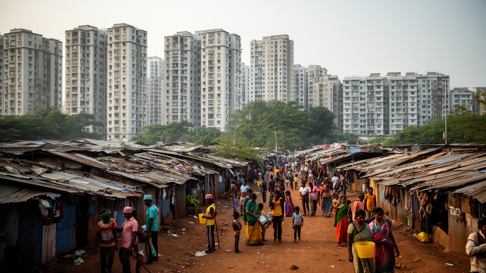
急成長したベンガルールでは、住宅の形が都市の階層を強く映します。旧市街の密な商住混在、植民地期のカントンメント、公共部門の住宅地、湖沿いの古い村、郊外のゲーテッドコミュニティ、建設労働者の仮設住まいが同じ都市圏に並びます。IT回廊の近くでは家賃が上がり、若い技術者はシェア住宅や長い通勤を選びます。家族世帯は学校、病院、職場、渋滞を計算して住む場所を決めますが、低賃金の労働者には選択肢が限られます。再開発と道路拡幅は利便性を高める一方、古い市場や小さな住宅を圧迫します。水道、下水、ゴミ収集、歩道、公園が追いつかない地区では、見た目の近代化と生活基盤の不足が同時に現れます。周辺の村が住宅地へ変わると、土地を手放した家族の次の仕事や、残された湖と寺院の扱いも問題になります。高層住宅が増えても、保育、買い物、診療所、公共交通が遠ければ生活は車に依存します。子どもの遊び場、高齢者の散歩道、通学バスの待ち場所が不足すれば、住宅地は便利でも孤立しやすいです。家賃の上昇は独身の専門職にも重く、家族を呼べない若者や遠距離通勤を続ける労働者を増やします。住宅の公平さは、賃料だけでなく、通学路、排水、治安、近所の商店まで含めて判断されます。郊外の大型住宅は安心を売りますが、門の外の歩道、排水、労働者の宿舎まで含めて都市です。住まいの質は建物の内部だけでなく、外に出た瞬間の街路で決まります。
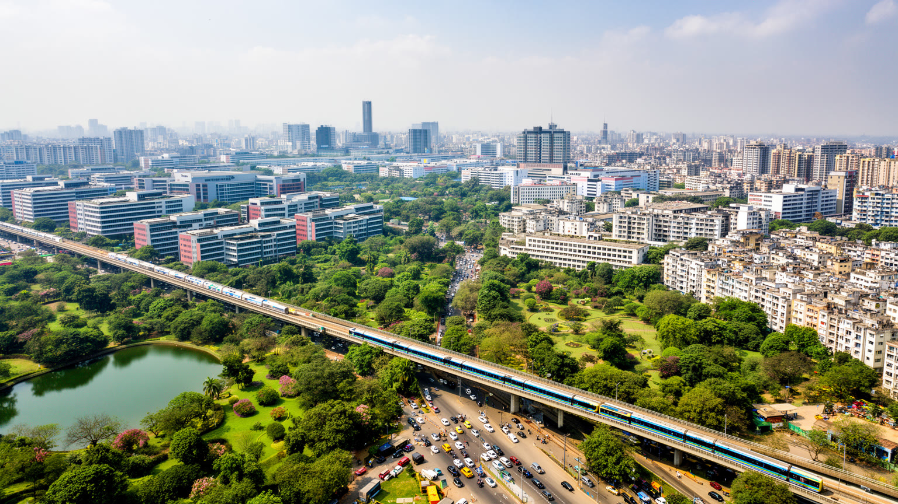
ベンガルールは、インドの技術力を象徴する都市であると同時に、急成長する都市が抱える限界をよく見せる場所でもあります。世界の企業を支えるコード、半導体設計、航空宇宙研究、起業家精神は、州都の制度、公共研究、大学、英語教育、移住者の努力によって築かれました。その一方で、水不足、湖の汚染、渋滞、住宅費、言語政治、労働格差、公共交通の遅れは、成功の速度が生活基盤を追い越したことを示します。ベンガルールを読むことは、テック都市の未来を礼賛するだけではなく、誰がその未来に住めるのかを問うことです。RCBを追うクリケットの夜、フットボールやカバディの地域試合、ロックやインディー音楽のライブ、Deepavaliの光、Karagaの行列も、都市が仕事だけで動かないことを示します。高賃金の専門職、学生、家事労働者、運転手、屋台商、研究者、子ども、高齢者、地元の家族が同じ都市を使い続けられるか。水を守り、公共交通を厚くし、地域文化を尊重し、サービス労働の条件を上げることが、技術都市の信頼を作ります。世界の業務を引き受ける都市であるほど、足元の湖、言語、歩道、学校を軽く扱うことはできません。短い滞在では近代的なオフィスが目立ちますが、長く見るほど市場、寺院、バス停、賃貸住宅、水槽の存在が重要になります。湖と道路、言語と雇用、大学と市場、空港と旧市街、スポーツと夜の街を一緒に見ると、経済成長と日常生活の調整を迫られる世界都市として立ち上がります。